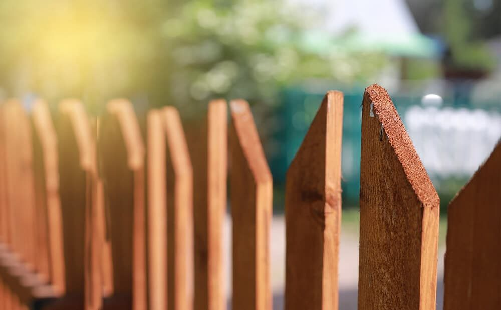

In This Guide
- Contractors tend to have more open calendar space in slower months, which can mean easier scheduling and a shorter wait for a start date.
- A quieter stretch gives you time to compare materials, collect quotes, and sort out approvals without feeling rushed.
- Some companies may offer better pricing when demand is soft, but that is never guaranteed, so ask instead of assuming.
- In south Louisiana, hurricane season and heavy summer rain are worth planning around when you pick a start date.
Most people think about a new fence when the weather turns nice and the yard gets busy. So does everyone else, and that is when contractors fill up. Planning ahead and choosing a quieter time of year can make the whole project smoother.
Here is what the team at Big Easy Fence would tell a homeowner weighing timing, along with a few points that are specific to south Louisiana. If you are still deciding what to build, our residential fencing page is a good starting place.
What "Off-Season" Really Means for Fences
The off-season is simply the stretch of the year when fewer people are calling for new fences. For many homeowners, spring and early summer feel like the natural time to start, so late fall and winter are the usual candidates for a quieter schedule. The exact pattern can shift from year to year and from company to company, so the best move is to ask your contractor which months tend to be slower.
South Louisiana adds its own wrinkles. Our winters are mild, so there is rarely a stretch when the ground is unworkable. That gives us more good installation weather than much of the country, and it means the calendar matters less than the contractor's workload.
The Benefits of Buying in a Slower Season
Easier Scheduling
When a contractor is less busy, you generally have more say in the start date. You may be able to book a site visit sooner, get an estimate back faster, and see a crew show up closer to when you hoped. If you are working around a family event, a landscaping project, or a home renovation, that flexibility is worth a lot.
More Time to Plan and Compare
A rushed decision is how people end up with a fence they only half like. In a slower stretch, you can look at materials, walk the property line, and compare estimates from more than one company without a clock ticking. Our fence types page is a good place to browse while you think it through.
Possible Savings
Some companies choose to offer better pricing or incentives when demand is soft and they want to keep crews working. Others do not. There is no guarantee, so treat it as a question to ask and not something to expect. A fair price and a clear scope matter more than a discount that comes with a rushed job.
Done Before the Busy Months
Finishing a fence before spring means the yard is ready when you want to use it. Pets and kids have their boundary, the privacy is in place, and you are not still waiting on a crew when the weather is at its best.

What Louisiana Weather Adds to the Timing Question
Calendar advice from other parts of the country only goes so far here.
Hurricane Season
The Atlantic hurricane season runs from June 1 through November 30, so a large part of the year comes with storm risk. A storm can also send a wave of repair calls to local contractors, and that can stretch schedules for everyone. If you want new work done without delays, it helps to book well before a storm threatens.
Heavy Summer Rain
Afternoon downpours are common in the warm months, and wet weather can delay digging, concrete, and painting. A slower season with steadier weather can mean fewer weather days.
Mild Winters
Because our winters are mild, wood, vinyl, and metal fences can all go in during those months. Concrete for posts sets fine in mild temperatures, so a cool, dry spell often makes for good installation conditions.
How to Prepare Before You Call
A little groundwork lets you take full advantage of a quiet calendar.
- Decide what the fence must do. Privacy, pets, curb appeal, or security each point to a different design.
- Know your property lines. If you are unsure where they sit, check your survey or plat before anyone digs.
- Check the rules. Ask your homeowners association about style and height limits, and ask your contractor what approvals the job needs.
- Gather quotes. Ask each company to price the same height, material, and length so the numbers compare fairly.
- Ask about lead times. Materials and permits can add weeks, so find out how long each step is likely to take.

When Waiting Is Not the Right Call
Timing advice has limits. If you have a pool, a young child, or a dog that keeps getting out, safety comes first, and that project should not wait for a better month. The same goes for a damaged fence after a storm. A leaning section or missing panels get worse with the next round of wind, so it is better to get a fence repair on the schedule quickly.
Making the Call on Timing
A slower season can give you more scheduling room, more time to compare, and a chance at better pricing, but only if the contractor's calendar really is open. Ask when their quiet months fall, and work backward from the date you want the fence in place.
To find out how soon a project could start, a free estimate is a good first step.
Want to Plan Your Fence Ahead of Time?
Tell us what you are thinking about and when you would like it done. We will help you plan a realistic schedule.